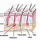

OncoGuía - Tipos de cáncer
-
 Adenoma de HipófisisGlándula situada en la silla turca
Adenoma de HipófisisGlándula situada en la silla turca -
 ColonLa última porción del aparato digestivo
ColonLa última porción del aparato digestivo -
 Cuello Uterino/Cérvixparte más inferior del aparato rep. femenino
Cuello Uterino/Cérvixparte más inferior del aparato rep. femenino -
 Endometrio/úteroórgano hueco, situado en la pelvis.
Endometrio/úteroórgano hueco, situado en la pelvis. -
 Esófagotubo hueco que transporta los alimentos
Esófagotubo hueco que transporta los alimentos -
 Estómagositúado en la parte alta del abdomen
Estómagositúado en la parte alta del abdomen -
 GliomasSe produce en el cerebro o en la médula espinal
GliomasSe produce en el cerebro o en la médula espinal -
 MamaGlándula destinada a la producción de leche
MamaGlándula destinada a la producción de leche -
 Médula Espinalel tejido nervioso más extenso del cuerpo
Médula Espinalel tejido nervioso más extenso del cuerpo -
 Meduloblastomatumores malignos en la fosa posterior del cerebro
Meduloblastomatumores malignos en la fosa posterior del cerebro -
 MelanomaCrecimiento de los melanocitos
MelanomaCrecimiento de los melanocitos -
 MeningiomasTumor cerebral usualmente benigno
MeningiomasTumor cerebral usualmente benigno -

No MelanomaEl tumor más frecuente del ser humano
-
 PáncreasGlándula que participa en el proceso de la digestión
PáncreasGlándula que participa en el proceso de la digestión -
 PróstataGlándula sexual exclusiva de los varones
PróstataGlándula sexual exclusiva de los varones -
 RectoLa última porción del aparato digestivo
RectoLa última porción del aparato digestivo -
 Vejigaórgano situado en la parte baja de la pelvis
Vejigaórgano situado en la parte baja de la pelvis
Cáncer de vejiga
Introducción
El sistema urinario está constituido por los riñones, los uréteres (tubos finos que transportan la orina desde los riñones a la vejiga) y la vejiga.
La vejiga es un órgano situado en la parte baja de la pelvis, con forma de globo que recoge y almacena la orina hasta su expulsión, al exterior, a través de la uretra. En la mujer la uretra es un tubo fino y corto, que desemboca por delante de la vagina, mientras que en el varón atraviesa la glándula prostática y el pene desembocando en su extremo.
Vejiga masculina
La pared de la vejiga está formada por 3 capas:
- Capa mucosa: También llamado urotelio, que posee hasta ocho capas de células, impermeable en contacto con la orina. Por fuera se sitúa la lámina propia que es de tejido conjuntivo.
- Capa muscular: Constituida por tres capas de músculo liso que en su conjunto forman el músculo detrusor. Cuando este músculo se contrae, vence la resistencia del esfínter de la orina y se produce la expulsión de la orina al exterior.
- Capa serosa: es el recubrimiento exterior de la vejiga. Además, el peritoneo (tejido que cubre las vísceras abdominales) lo rodea por su cara superior y posterior, así como por sus laterales cuando está llena.
Vejiga femenina
En España se diagnostican más de 13.000 casos nuevos cada año. La incidencia en nuestro país es de las más altas del mundo lo que supone el cuarto tumor más frecuente en hombres tras los de próstata, pulmón y colorrectales. Sin embargo en mujeres, tanto la incidencia como la mortalidad son bajas y relativamente estables.
El 90-93% de los cánceres de vejiga son carcinomas de células transicionales. El resto son carcinomas escamosos y adenocarcinomas.
El pico de incidencia se encuentra entre los 65 y los 75 años, con un máximo a los 70, aunque se observan casos desde los 40-45 años.
Prevención
Un 70-75% de los casos de cáncer de vejiga se pueden atribuir al consumo de tabaco. Los fumadores presentan un riesgo 2 veces superior a los no fumadores de padecer un cáncer de vejiga. Las sustancias cancerígenas del tabaco pasan a la sangre, son filtradas por el riñón y se concentran en la vejiga.
Otros factores (hasta un 20%) son debidos a la exposición laboral como los trabajadores del sector de las gomas, tintes, pinturas, metal, cueros, o bien mineros y conductores (alto porcentaje de aminas aromáticas). Las infecciones crónicas de la vejigay determinados fármacos empleados en quimioterapia como la ciclofosfamida y la ifosfamidapueden favorecer la aparición de cáncer a ese nivel. Para reducir la irritación vesical secundaria a estos agentes, se puede emplear una sustancia protectora (mesna).
Evitar el consumo de tabaco y seguir las recomendaciones de protección laboral puede reducir de manera llamativa el riesgo de desarrollar este tipo de tumor,
Diagnóstico Precoz
En la actualidad, no existe ninguna prueba que utilizada de forma masiva en población sana pueda resultar útil en el diagnóstico precoz del cáncer de vejiga.
Síntomas y Diagnóstico Clínico
En general, en las fases más tempranas de la enfermedad el paciente no presenta síntomas, o éstos son mínimos.
Los síntomas más frecuentes del cáncer vesical son los siguientes:
- Sangre en orina (hematuria): Es el síntoma más frecuente del cáncer de vejiga, de hecho, aparece en el 70% de los pacientes. El color de la orina es variable en función de la cantidad de sangre que contenga y puede manifestarse desde color rosa pálido a rojo. La cantidad de sangre no se relaciona con el tamaño o la extensión del tumor. En ocasiones, es preciso realizar un análisis que determine su presencia (microhematuria)
- El tenesmo(sensación constante de ganas de orinar) y el incremento de la frecuencia urinaria son, también, síntomas frecuentes que pueden aparecer en el cáncer de vejiga.
- Dolor o escozor al orinar (disuria): Aparece en menos de un 20% de los pacientes con cáncer de vejiga.
- Otros síntomas son la disminución de fuerzay calibredel chorro de la orina y la obstrucción urinaria.
Cuando un paciente acude al urólogo con estos síntomas, tras la realización de una historia clínica y exploración física, el médico solicitará una serie de pruebas:
- Análisis de orina: Se realiza para descartar una infección urinaria, ya que con frecuencia produce síntomas muy similares al cáncer de vejiga. Además, permite detectar la presencia de sangre en orina en cantidades mínimas no visibles.
- Citología de la orina: La orina se estudia al microscopio para determinar si existen células malignas.
- Ecografía: exploración de la vejiga y los riñones, mediante ultrasonidos. Permite valorar el estado de los riñones y si la pared de la vejiga se encuentra engrosada por un posible tumor. Además con esta prueba es posible estudiar el hígado para descartar metástasis.
- Urografía intravenosa: Mediante un estudio radiográfico con contraste intravenoso es posible estudiar el aparato urinario (riñones, uréteres y vejiga).
- Cistoscopia: A través de la uretra se introduce un tubo fino y flexible con una luz en su extremo (cistoscopio) que permite visualizar directamente el interior de la vejiga urinaria.
- Biopsia: si durante la realización de la cistoscopia, el urólogo observa una lesión sospechosa en la mucosa de la vejiga, puede tomar una pequeña muestra de tejido, que posteriormente se analizará al microscopio, de tal forma que permita descartar o confirmar la existencia de un tumor.
Una vez que se ha diagnosticado un cáncer de vejiga, es preciso determinar la extensión local y a distancia de la enfermedad, mediante:
- Radiografía de tórax: su objetivo es estudiar los pulmones y descartar afectación de los mismos por el tumor (metástasis).
- Tomografía computerizada (TC/scanner) Toraco-abdómino-pélvico: exploración que utiliza rayos X, tomando una serie de imágenes del interior del cuerpo. Habitualmente se administra contraste (oral y/o intravenoso) con el fin de localizar la lesión tumoral, determinar la extensión y la posible afectación de los ganglios linfáticos adyacentes, así como descartar o confirmar la afectación de otros órganos.
- Resonancia Magnética: Está basada en la emisión de radiofrecuencias en un campo magnético. Se utiliza para conocer la morfología de la lesión. Se emplea cuando el TC no ha proporcionado información suficiente para valorar la extensión de la enfermedad.
- Gammagrafía ósea: se realiza únicamente cuando se sospecha que puede existir afectación ósea por el tumor.
Fases del tumor
Con el fin de determinar el tratamiento más adecuado para el cáncer de vejiga, es importante conocer la extensión de tumor. Dependiendo de si el tumor está confinado a la propia vejiga, invade estructuras vecinas u órganos a distancia, el tumor se clasifica en diferentes estadios:
- Estadio 0a: el tumor maligno es un carcinoma papilar no invasivo. Crece en la pared de la vejiga sin invadirla en profundidad. No afecta a ganglios linfáticos.
- Estadio 0is: se trata de un carcinoma no invasivo que sólo afecta a la capa más superficial de la pared de la vejiga (urotelio). En esta etapa el cáncer no afecta a los ganglios linfáticos.
- Estadio I: el tumor sobrepasa el urotelio sin llegar a la capa muscular de la vejiga. No afecta a los ganglios linfáticos.
- Estadio II: el cáncer alcanza la capa muscular sin traspasarla en su totalidad. No hay afectación ganglionar.
- Estadio III: el cáncer ha invadido la capa muscular en su totalidad e infiltra el tejido adiposo que rodea la vejiga. Puede afectar la próstata, útero o vagina. En el estadio III no hay afectación ganglionar ni de otros órganos a distancia.
- Estadio IV: el cáncer ha atravesado la pared de la vejiga y llega hasta la pared de la pelvis o del abdomen y/o ha afectado a los ganglios linfáticos u órganos a distancia como hígado, huesos y pulmones.